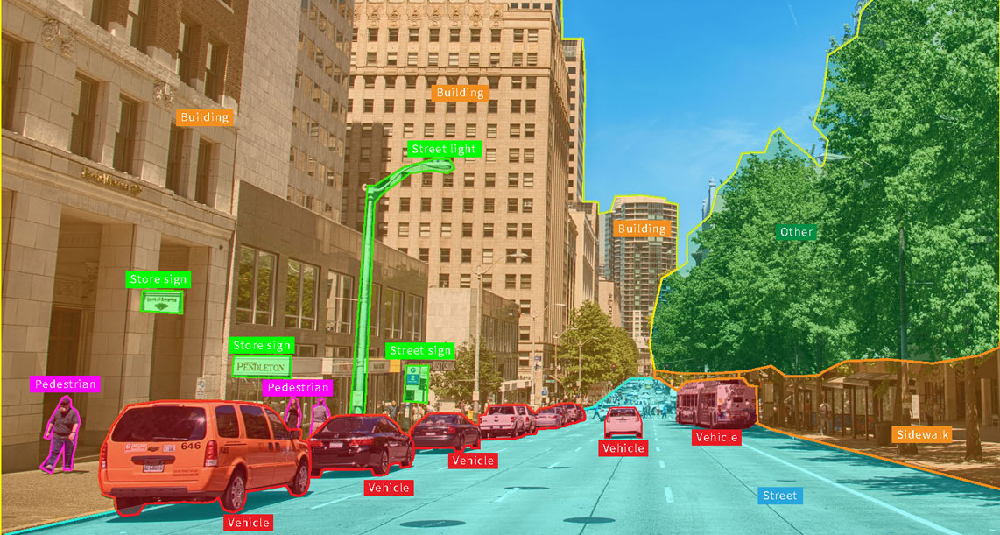

Computer Vision
Computer Vision — это библиотека с открытым исходным кодом для работы с компьютерным зрением. Изначально она была написана на C++, но адаптирована для использования на Python, С, Java и MATLAB
В CV есть встроенные алгоритмы компьютерного зрения на основе машинного обучения в виде отдельных модулей с разной функциональностью. Вот некоторые из них:
Core Functionality (основная функциональность) — определяет основные структуры данных и функции библиотеки, которые используются в других модулях.
Image Processing (обработка изображений) — позволяет работать со статичными изображениями: простыми картинками в форматах PNG, JPG и других.
Video Analysis (анализ видео) — используется для отслеживания движений объектов и работы с фоном.
Camera Calibration and 3D Reconstruction (калибровка камеры и 3D-реконструкция) — работает с геометрией объектов, позволяя создавать их 3D-модели на основе нескольких изображений или видео.2D Features Framework (фреймворк двумерных особенностей) — определяет фрагменты изображения, которые отличаются от других, запоминая их контуры, и может находить похожие среди них.
Object Detection (обнаружение объектов) — находит объекты, например лица, автомобили, птиц и другое.

High-level GUI (высокоуровневый графический интерфейс) — позволяет рисовать графические интерфейсы для выполнения простых операций.
Video I/O (ввод и вывод видео) — позволяет считывать и обрабатывать видеофайлы.
Где применяют компьютерное зрение и CV
Компьютерное зрение уже повсюду в нашей жизни: роботы-пылесосы и автомобили объезжают препятствия, а соцсети находят фотографии с вами и спрашивают, вы ли это.
Компьютерное зрение используют для решения разных задач.
Распознавать текст. Например, чтобы перевести этикетку, можно включить на телефоне приложение-переводчик и навести его на текст. Приложение распознает его и переведёт на нужный язык.
Искать по изображениям. Можно сфотографировать незнакомый цветок и узнать его название, загрузив фотографию в поисковик Google или «Яндекс».
Модерировать контент. Многие форумы и соцсети анализируют контент и автоматически удаляют его, если он нарушает правила платформы.
Использовать биометрию. Чтобы вы могли разблокировать телефон или войти в сервис по отпечатку пальца или лицу, ваши данные обрабатываются алгоритмами компьютерного зрения.

Создавать 3D-модели. Компьютерное зрение позволяет на основе нескольких фотографий или видео создать 3D-модель объекта или пространства. Это используется для восстановления облика объектов и ландшафта, а в робототехнике — чтобы робот мог ориентироваться в помещениях.
Развивать сельское хозяйство. С помощью компьютерного зрения можно считать поголовье скота и следить за посевами: оценивать их состояние, обнаруживать вредителей и болезни до того, как их заметил бы человек.
Управлять производством. Вместо того чтобы полагаться в выполнении рутинных задач на людей, компьютерное зрение может анализировать продукцию и процессы самостоятельно. Например, можно установить камеру, которая будет прямо на конвейере выявлять бракованную продукцию. В отличие от человека, такая система не устанет и не отвлечётся.
Для создания систем с компьютерным зрением подходят разные инструменты. Один из самых популярных — OpenCV. Его используют Google, Yahoo, Microsoft, Intel, IBM, Sony, Honda, Toyota и другие технологические компании для решения разнообразных задач.Например, с помощью OpenCV в Китае следят за состоянием оборудования в шахтах, а в Японии распознают лица людей.
.